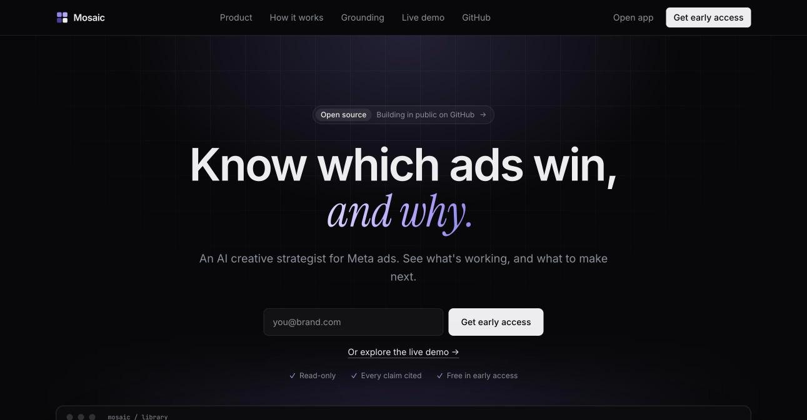
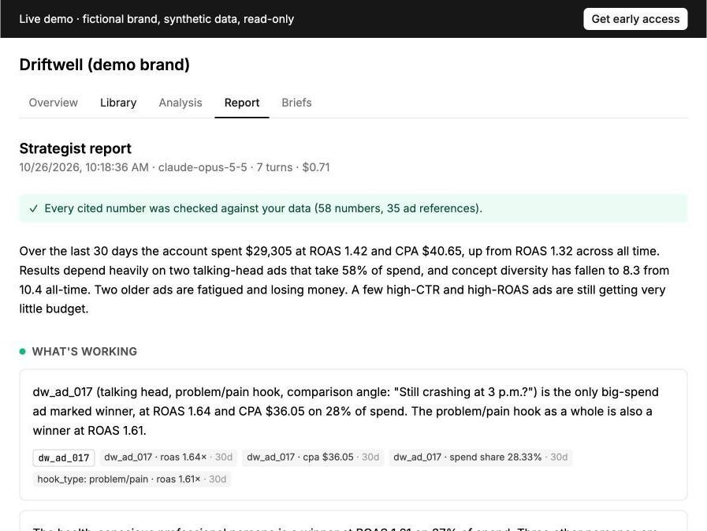

Mosaic
in progress · 2026
An AI creative strategist for Meta ads. It watches every ad, ties what's in it to results, and tells you what to make next.

problem
Brands run hundreds of ads and struggle to tell which hooks and formats actually drive results. Performance data is noisy, so small differences are easy to misread.
what i built
- Syncs ads and results from the Meta API.
- Splits each video into scenes, transcripts and tags.
- Ranks hooks and formats with statistical shrinkage.
- Writes reports where every claim cites its ads.
how it works
A multimodal pipeline feeds Postgres and pgvector. Claude agents query it to write reports. Evals run in CI.

stack
React, FastAPI, Supabase, pgvector, Gemini, Claude, Modal, Langfuse.